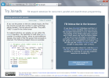

The F# Computation Expression Zoo
Tomas Petricek and Don Syme
In Proceedings of PADL 2014
Many computations can be structured using abstract computation types such as monoids, monad transformers or applicative functors. Functional programmers use those abstractions directly while main-stream languages often integrate concrete instances as language features - e.g. generators in Python or asynchronous computations in C# 5.0. The question is, is there a sweet spot between convenient, hardwired language features, and an inconvenient but flexible libraries?
F# computation expressions answer this question in the affirmative. Unlike
the do notation in Haskell, computation expressions are not tied to a single kind of abstraction.
They support a wide range of computations, depending on what operations are available. They also
provide greater syntactic flexibility leading to a more intuitive syntax, without resorting to
full macro-based meta-programming.
We show that computation expressions can structure well-known computations including monoidal list comprehensions, monadic parsers, applicative formlets and asynchronous sequences based on the list monad transformer. We also present typing rules for computation expressions that are capable of capturing all these applications.
Paper and more information
- Download the paper (PDF)
- View poster from TFP 2012
- View talk slides from TFP 2012
Related papers
An earlier draft of the paper appeared in pre-proceedings of TFP 2012. The PADL 2014 version differs in that it emphasizes the different abstractions that can be encoded (over different applications) and it discusses laws in more details, as well as how to use laws to choose between different syntactic options. The older draft might still be interesting as it provides more tutorial style overview, especially for those already familiar with F#:
- Syntax Matters: Writing abstract computations in F# (PDF) (Tomas Petricek and Don Syme, In Pre-proceedings of TFP 2012)
Try Joinads
Try Joinads is a web site, using the open-source release of F# that comes with a browser-based F# console where you can experiment with the computations described in the paper and explore the full implementation. It also implements syntax for applicative functors that is not available in the current version of F#.
- See the paper page on Try Joinads
Bibtex
If you want to cite the paper, you can use the following BibTeX information, or get full details from the paper page on ACM.
1: 2: 3: 4: 5: 6: 7: 8: |
|
If you have any comments, suggestions or related ideas, I'll be happy to hear from you! Send me an email at tomas@tomasp.net or get in touch via Twitter at @tomaspetricek.
Published: Monday, 3 February 2014, 12:00 AM
Author: Tomas Petricek
Typos: Send me a pull request!